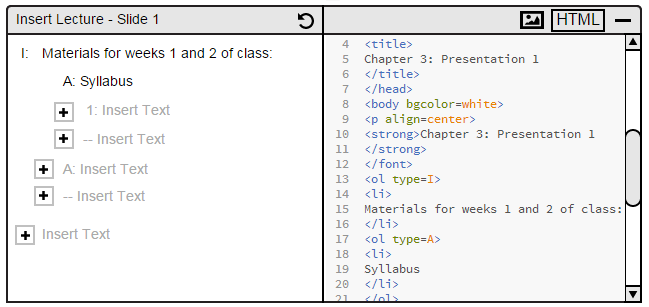
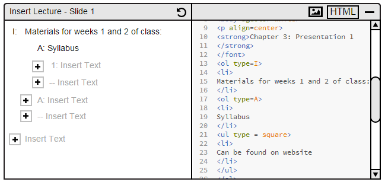
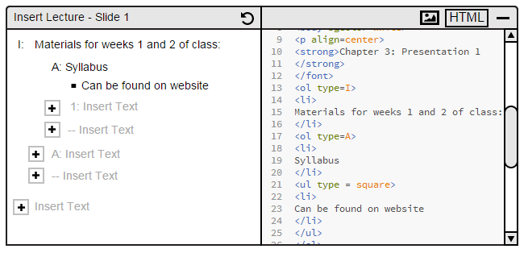

The tools provided in this Electronic Classroom to create a lecture are simple and straight forward. Users have the ability to further customize their presentations. When the user selects the HTML button in the top right corner, the HTML editor will appear as shown in Figure 26.
In order to edit the HTML format of the lecture, the user needs to open up the 'Insert Lecture' window and select on a lecture slide. On the window, there is a button labeled HTML on the right top corner. When the user presses the "HTML" button, the system will display the editor as shown in Figure 26.

Figure 26: HTML Edit - Main view.

Figure 27: Editing HTML screen.

Figure 28: Editing Lecture Slide - Refreshed Screen.
HTML Format Table
| HTML Tag | Electronic Class Interpretation |
| <hr> | slide break |
| <ol type = I|A|1|a|i, IS_EXPANDED = TRUE|FALSE> | Start roman numeral topics |
| <ol type = 1|1.1|1.1.1, IS_EXPANDED = TRUE|FALSE> | Start decimal topics |
| <ol type = disc|circle|square, IS_EXPANDED = TRUE|FALSE> | Start bullet point topics |
| <P hidden> | Don't show during lecture, but show offline with 'Show Details' | <li> | one topic | </ol> | End numbered topics |